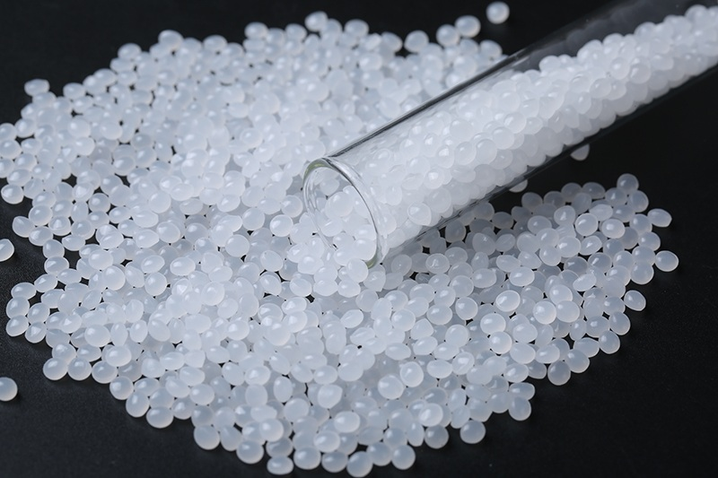

BỘ CÔNG THƯƠNG
BỘ CÔNG THƯƠNG
CỤC PHÒNG VỆ THƯƠNG MẠISỐ 30.2026
♦ Vương quốc Anh khởi xướng điều tra tự vệ đối với sản phẩm Polyethylene Terephthalate (PET) nhập khẩu


♦ In-đô-nê-xi-a chấm dứt điều tra, không áp thuế chống bán phá giá đối với nhựa polypropylene homopolymer có xuất xứ từ Việt Nam và một số nước
NỘI DUNG CHÍNH
THÔNG TIN XUẤT NHẬP KHẨU
- Chưa có nội dung trong tài liệu Word.
Vương quốc Anh khởi xướng điều tra tự vệ đối với sản phẩm Polyethylene Terephthalate (PET) nhập khẩu
Ngày 05 tháng 8 năm 2026, Cơ quan Phòng vệ thương mại Vương quốc Anh (TRA) đã khởi xướng điều tra tự vệ đối với sản phẩm Polyethylene Terephthalate (PET) nhập khẩu.
Sản phẩm thuộc phạm vi điều tra là nhựa Polyethylene terephthalate, bao gồm nhựa nguyên sinh (vPET) có chỉ số độ nhớt từ 74 ml/g trở lên và nhựa tái chế (rPET) có cùng dải độ nhớt. Sản phẩm được phân loại theo các mã hàng hóa tham khảo 3907 6100 và 3907 6900.
Theo đơn yêu cầu điều tra, lượng nhập khẩu sản phẩm PET vào Vương quốc Anh đã gia tăng đáng kể trong giai đoạn 2021–2025 và gây thiệt hại nghiêm trọng cho ngành sản xuất PET trong nước. Nguyên đơn cho rằng sự gia tăng nhập khẩu có liên quan đến một số diễn biến bất ngờ, trong đó có xung đột Nga - Ukraina, tình trạng dư thừa năng lực sản xuất PET trên toàn cầu và những thay đổi cơ bản của thị trường nhựa PET tại châu Á. Những yếu tố này được cho là đã làm giảm thị phần của các nhà sản xuất trong nước và ảnh hưởng tiêu cực đến doanh thu, sản lượng, năng suất và việc làm của ngành sản xuất PET tại Vương quốc Anh.
Thời kỳ điều tra được xác định từ ngày 01 tháng 01 năm 2021 đến ngày 31 tháng 12 năm 2025. Trong quá trình điều tra, TRA dự kiến sẽ thông báo vụ việc tới Ủy ban Tự vệ của WTO, gửi bản câu hỏi điều tra cho các nhà sản xuất trong nước và các bên liên quan, tiến hành thẩm tra, xác minh thông tin và xem xét khả năng áp dụng biện pháp tự vệ tạm thời nếu có đủ căn cứ theo quy định.
Các bên liên quan, bao gồm nhà sản xuất, nhà xuất khẩu, nhà nhập khẩu và Chính phủ các nước có liên quan, nếu muốn tham gia vụ việc, phải đăng ký với TRA thông qua Hệ thống Dịch vụ Phòng vệ thương mại (Trade Remedies Service) chậm nhất ngày 19 tháng 8 năm 2026.
Cục Phòng vệ thương mại khuyến nghị Hiệp hội Nhựa Việt Nam (VPAS) và các doanh nghiệp sản xuất, xuất khẩu sản phẩm PET thuộc phạm vi điều tra rà soát tình hình xuất khẩu sang Vương quốc Anh, nghiên cứu kỹ thông tin vụ việc và đăng ký tham gia với tư cách bên liên quan đúng thời hạn để bảo vệ quyền và lợi ích hợp pháp trong quá trình điều tra.
In-đô-nê-xi-a chấm dứt điều tra, không áp thuế chống bán phá giá đối với nhựa polypropylene homopolymer có xuất xứ từ Việt Nam và một số nước
Ngày 06 tháng 8 năm 2026, Ủy ban Chống bán phá giá In-đô-nê-xi-a (KADI) thông báo chấm dứt vụ việc và không áp dụng thuế chống bán phá giá (CBPG) đối với sản phẩm nhựa polypropylene homopolymer (PPH), mã HS 3902.10.40, có xuất xứ từ Ả Rập Xê Út, Ma-lai-xi-a, Trung Quốc, Phi-líp-pin, Hàn Quốc, Singapore, Thái Lan và Việt Nam.
Quyết định được KADI đưa ra trên cơ sở cân nhắc nhiều yếu tố, trong đó có lợi ích quốc gia, bối cảnh kinh tế và địa chính trị trong nước và quốc tế, nhu cầu bảo vệ ngành sản xuất hạ nguồn và bảo đảm nguồn cung nguyên liệu đầu vào cho thị trường nội địa.
Trước đó, tháng 12 năm 2024, KADI đã khởi xướng điều tra CBPG đối với sản phẩm PPH nhập khẩu từ các quốc gia nêu trên. Quá trình điều tra kéo dài đến tháng 6 năm 2026. Ngày 02 tháng 6 năm 2026, KADI ban hành Kết luận cuối cùng, xác định có hành vi bán phá giá và tính toán biên độ phá giá từ 7,07% đến 17,32% đối với các doanh nghiệp xuất khẩu của Việt Nam.
Trong quá trình điều tra, Cục Phòng vệ thương mại đã phối hợp với các hiệp hội và doanh nghiệp liên quan, nhiều lần gửi ý kiến tới KADI, đề nghị cơ quan điều tra xem xét đầy đủ các quan điểm của Chính phủ và doanh nghiệp Việt Nam, cũng như tác động của việc áp dụng biện pháp đối với ngành sản xuất hạ nguồn và nguồn cung nguyên liệu tại In-đô-nê-xi-a.
Việc KADI chấm dứt vụ việc và không áp dụng thuế CBPG có ý nghĩa tích cực đối với hoạt động xuất khẩu sản phẩm PPH của Việt Nam sang thị trường In-đô-nê-xi-a, góp phần duy trì và mở rộng thị trường xuất khẩu. Theo số liệu của Hải quan Việt Nam, trong thời kỳ điều tra từ tháng 4 năm 2023 đến tháng 3 năm 2024, kim ngạch xuất khẩu PPH của Việt Nam sang In-đô-nê-xi-a đạt trên 160 triệu USD; riêng năm 2024 đạt trên 200 triệu USD.
Trong thời gian tới, Cục Phòng vệ thương mại khuyến nghị các hiệp hội và doanh nghiệp sản xuất, xuất khẩu PPH tiếp tục theo dõi sát diễn biến tại thị trường In-đô-nê-xi-a, chủ động nắm bắt thông tin trong trường hợp có diễn biến mới, đồng thời cân đối hoạt động sản xuất, xuất khẩu nhằm duy trì tăng trưởng ổn định và bền vững tại thị trường này. Doanh nghiệp cũng cần nghiên cứu, nắm rõ quy định và thủ tục điều tra PVTM của In-đô-nê-xi-a và các thị trường xuất khẩu trọng điểm để chủ động ứng phó khi phát sinh vụ việc trong tương lai.
Ca-na-đa áp dụng biện pháp tự vệ tạm thời đối với một số sản phẩm tủ gỗ và tủ lavabo nhập khẩu
Ngày 31 tháng 7 năm 2026, Chính phủ Ca-na-đa công bố áp dụng biện pháp tự vệ tạm thời dưới hình thức thuế nhập khẩu bổ sung 25% đối với một số sản phẩm tủ gỗ và tủ lavabo nhập khẩu. Biện pháp có hiệu lực từ ngày 31 tháng 7 năm 2026 và được áp dụng trong thời hạn tối đa 200 ngày.
Sản phẩm thuộc phạm vi áp dụng gồm một số loại tủ và tủ lavabo được làm toàn bộ hoặc một phần từ gỗ, gỗ công nghiệp, ván dăm, ván sợi, ván ép hoặc tre, được thiết kế để lắp đặt cố định tại nhà bếp, phòng tắm hoặc các vị trí khác trong nhà. Một số mã HS tham khảo gồm 9403.40.00.10; 9403.60.10.31; 9403.60.10.39 và 9403.91.00.90. Đồ nội thất rời không lắp đặt cố định và một số phụ kiện, phần cứng không bằng gỗ được loại trừ khỏi phạm vi áp dụng.
Biện pháp không áp dụng đối với hàng hóa có xuất xứ từ Hoa Kỳ, Mê-hi-cô, Chi-lê, I-xra-en và một số nước đang phát triển thuộc danh sách được Ca-na-đa miễn trừ. Việt Nam không thuộc danh sách miễn trừ, do đó hàng hóa thuộc phạm vi áp dụng có xuất xứ Việt Nam sẽ chịu thuế bổ sung 25% kể từ ngày 31 tháng 7 năm 2026.
Biện pháp tạm thời được áp dụng trong khi Tòa án Thương mại Quốc tế Ca-na-đa (CITT) tiến hành điều tra tự vệ đối với một số sản phẩm gỗ. CITT dự kiến hoàn tất điều tra và đưa ra kết luận trước ngày 15 tháng 01 năm 2027. Trường hợp xác định có thiệt hại nghiêm trọng, Ca-na-đa có thể xem xét áp dụng biện pháp tự vệ chính thức.
Cục Phòng vệ thương mại khuyến nghị các hiệp hội, doanh nghiệp sản xuất, xuất khẩu liên quan rà soát phạm vi sản phẩm, mã HS và tình hình xuất khẩu sang Ca-na-đa, đánh giá tác động của mức thuế bổ sung 25% và chủ động chuẩn bị phương án ứng phó. Doanh nghiệp cũng cần theo dõi, tham gia quá trình điều tra của CITT và cung cấp thông tin khi cần thiết để bảo vệ quyền và lợi ích hợp pháp.
Úc áp dụng thuế chống bán phá giá tạm thời đối với sản phẩm lưới thép hàn nhập khẩu từ Trung Quốc
Ngày 7/8/2026, Ủy ban Chống bán phá giá Úc ban hành thông báo về kết luận sơ bộ đối với hành vi bán phá giá sản phẩm lưới thép hàn dạng tấm nhập khẩu từ Trung Quốc. Sản phẩm thuộc phạm vi điều tra được phân loại theo các mã HS 7314.20.00.24, 7314.31.00.37, 7314.39.00.38, 7217.10.00.39, 7217.10.00.40, 7217.20.00.41 và 7217.20.00.42.
Trên cơ sở kết luận sơ bộ, Úc áp dụng biện pháp chống bán phá giá tạm thời dưới hình thức ký quỹ đối với hàng hóa thuộc phạm vi điều tra kể từ ngày 8/8/2026. Mức thuế chống bán phá giá tạm thời áp dụng đối với các nhà sản xuất, xuất khẩu của Trung Quốc được xác định như sau:
- Beijing Xingtai Steel Weldmesh & Technology Development Co., Ltd.: 29,6%;
- Tianjin Tiankang Metal Products Co., Ltd.: 32,3%;
- Anhui BRC and Ma Steel Weldmesh Co., Ltd.: 28,4%;
- Các nhà xuất khẩu khác của Trung Quốc: 45,3%.
Đối với hàng hóa tương tự nhập khẩu từ Ma-lai-xi-a, Ủy ban Chống bán phá giá Úc sẽ tiếp tục điều tra do các chứng cứ hiện có chưa đủ cơ sở để đưa ra kết luận sơ bộ khẳng định về hành vi bán phá giá.
Tổng hợp từ yieh.com
POSCO kiến nghị điều chỉnh mức thuế chống bán phá giá sơ bộ của Nhật Bản đối với sản phẩm thép mạ kẽm nhập khẩu từ Hàn Quốc
Ngày 7/8/2026, POSCO đã gửi ý kiến phản hồi tới Bộ Tài chính Nhật Bản, cho rằng mức thuế chống bán phá giá dự kiến áp dụng đối với sản phẩm thép tấm và thép dải mạ kẽm nhúng nóng của Hàn Quốc là quá cao.
Thép tấm và thép dải mạ kẽm nhúng nóng là các sản phẩm được xử lý bề mặt bằng phương pháp nhúng nóng nhằm tăng khả năng chống ăn mòn, chủ yếu được sử dụng trong các lĩnh vực yêu cầu độ bền cao, như vật liệu xây dựng nhà ở. Theo nguồn tin, lượng sản phẩm này xuất khẩu từ Hàn Quốc sang Nhật Bản đạt khoảng 300.000–400.000 tấn/năm, với kim ngạch khoảng 300 tỷ won (tương đương 212 triệu USD).
Trước đó, ngày 30/7/2026, Bộ Kinh tế, Thương mại và Công nghiệp Nhật Bản (METI) và Bộ Tài chính Nhật Bản đã đưa ra kết luận sơ bộ cho rằng sản phẩm thép mạ kẽm nhúng nóng nhập khẩu từ Hàn Quốc và Trung Quốc được bán phá giá tại thị trường Nhật Bản, gây thiệt hại cho ngành sản xuất trong nước.
Theo thông báo của Bộ Tài chính Nhật Bản, mức thuế chống bán phá giá sơ bộ được áp dụng riêng cho 10 doanh nghiệp Hàn Quốc được xác định như sau: POSCO (29,2%), Hyundai Steel (38%), Dongkuk Steel (38%), KG Steel (38%), SeAH Coated Metal (30,6%), Dongkuk Coated Metal (30,6%), Hanwha (doanh nghiệp kinh doanh thép - 38%), Hyundai Group (doanh nghiệp xuất khẩu thép - 38%), STINKO (38%) và Korea JFE Shoji (38%). Các doanh nghiệp Hàn Quốc khác thuộc phạm vi điều tra chịu mức thuế chung 38%.
Các mức thuế chống bán phá giá sơ bộ được áp dụng từ ngày 8/8 đến ngày 7/12/2026, trong khi kết luận cuối cùng dự kiến được ban hành vào tháng 12/2026. Đại diện POSCO cho biết doanh nghiệp đã gửi ý kiến phản hồi trên cơ sở giải trình chi tiết về các tình tiết của vụ việc và các quy định của Hiệp định chống bán phá giá của WTO, đồng thời kỳ vọng mức biên độ bán phá giá sẽ được điều chỉnh.
Theo ngành thép Hàn Quốc, một trong những vấn đề được đặt ra là liệu các điều kiện xác định hành vi bán phá giá và áp dụng biện pháp chống bán phá giá đã được đáp ứng hay không.
Dựa trên số liệu năm 2024, là thời kỳ điều tra, giá bán bình quân sản phẩm thép mạ tại thị trường phân phối nội địa Hàn Quốc được cho là khoảng 1.118.000 won/tấn (860 USD/tấn). Trong khi đó, giá xuất khẩu sản phẩm từ Hàn Quốc sang Nhật Bản ở mức 1.160.000–1.170.000 won/tấn, cao hơn giá bán tại thị trường Hàn Quốc. Trên cơ sở đó, ngành thép Hàn Quốc cho rằng cơ sở xác định hành vi bán phá giá cần được xem xét lại, do giá xuất khẩu sang Nhật Bản không thấp hơn giá bán tại thị trường Hàn Quốc
Phía Hàn Quốc đồng thời đặt vấn đề đối với phương pháp xác định biên độ bán phá giá. Theo nguồn tin, khi Nhật Bản bắt đầu khởi xướng điều tra, các doanh nghiệp nguyên đơn, trong đó có Nippon Steel, Kobe Steel, Nippon Steel Coated Sheet và Yodogawa Steel Works, đưa ra mức biên độ bán phá giá khoảng 10–20%. Tuy nhiên, trong quá trình xác định sơ bộ, biên độ bán phá giá tăng lên hơn gấp đôi, đạt tối đa 42,69%, trước khi mức thuế chống bán phá giá được xác định ở mức tối đa 38%.
Trong bối cảnh trên, ngành thép Hàn Quốc cũng lo ngại tranh chấp thương mại giữa Hàn Quốc và Nhật Bản có thể mở rộng sang các sản phẩm thép khác.
Từ tháng 6/2026, METI và Bộ Tài chính Nhật Bản đang tiến hành điều tra đối với thép tấm và thép dải cán nóng, cán nguội nhập khẩu từ Hàn Quốc, Trung Quốc và Đài Loan (Trung Quốc), trên cơ sở có dấu hiệu cho thấy các sản phẩm này được xuất khẩu sang Nhật Bản với mức giá không công bằng.
Thép cán nóng được sử dụng rộng rãi trong sản xuất ô tô, vật liệu xây dựng và ống dẫn; trong khi thép cán nguội được sử dụng trong nhiều lĩnh vực, bao gồm sản xuất linh kiện ô tô và thiết bị gia dụng. Ngành thép Hàn Quốc ước tính lượng thép cán nóng và cán nguội xuất khẩu sang Nhật Bản cao gấp khoảng 10 lần so với lượng thép mạ. Do đó, tùy thuộc vào kết quả các cuộc điều tra đang được tiến hành, tác động đối với ngành thép có thể lớn hơn đáng kể so với vụ việc thép mạ.
Tổng hợp từ businesskorea.co
Hoa Kỳ áp dụng giá nhập khẩu tối thiểu và thuế bổ sung 15% đối với sản phẩm silicon đa tinh thể (polysilicon)
Ngày 6/8/2026, Tổng thống Hoa Kỳ Donald Trump đã ký Tuyên bố theo Mục 232 của Đạo luật Mở rộng Thương mại năm 1962, theo đó áp dụng giá nhập khẩu tối thiểu (MIP) đối với polysilicon ở mức 21 USD/kg và thuế bổ sung 15% đối với polysilicon và các sản phẩm dẫn xuất. Biện pháp này được ban hành trên cơ sở kết quả điều tra của Bộ Thương mại Hoa Kỳ (DOC) về tác động của việc nhập khẩu các sản phẩm polysilicon và các sản phẩm dẫn xuất đối với an ninh quốc gia, được khởi xướng từ tháng 7/2025.
Theo Chính quyền Hoa Kỳ, việc xác định polysilicon là sản phẩm có nguy cơ ảnh hưởng đến an ninh quốc gia xuất phát chủ yếu từ sự suy giảm đáng kể năng lực sản xuất trong nước và mức độ phụ thuộc ngày càng lớn vào nguồn cung từ nước ngoài. Thị phần công suất sản xuất polysilicon của Hoa Kỳ trên toàn cầu từng đạt khoảng 50% vào năm 2005 nhưng đã giảm xuống dưới 2% vào năm 2024, trong bối cảnh nguồn cung polysilicon giá thấp, được cho là có sự hỗ trợ đáng kể từ Chính phủ Trung Quốc, gia tăng trên thị trường quốc tế.
Bên cạnh đó, Chính phủ Hoa Kỳ cho rằng polysilicon là nguyên liệu quan trọng đối với cả ngành năng lượng mặt trời và công nghiệp bán dẫn. Polysilicon không chỉ được sử dụng để sản xuất mô-đun điện mặt trời mà còn là nguyên liệu cơ bản để sản xuất tấm vật liệu bán dẫn có độ tinh khiết cao. Theo đánh giá của Chính quyền Hoa Kỳ, việc suy giảm năng lực sản xuất polysilion trong nước có thể làm gia tăng sự phụ thuộc vào nguồn cung nước ngoài và ảnh hưởng đến khả năng bảo đảm chuỗi cung ứng trong các lĩnh vực chiến lược như chất bán dẫn, trí tuệ nhân tạo và quốc phòng.
Chính quyền Hoa Kỳ cũng cho rằng các biện pháp hiện hành chưa đủ để hạn chế tình trạng hàng hóa giá thấp tiếp tục nhập khẩu vào thị trường Hoa Kỳ. Theo nguồn tin, một số doanh nghiệp Trung Quốc đã chuyển hướng xuất khẩu thông qua Việt Nam, Thái Lan, Ma-lai-xi-a và Cam-pu-chia, làm giảm hiệu quả của các biện pháp chống bán phá giá và chống trợ cấp hiện hành. Do đó, việc áp dụng giá nhập khẩu được kỳ vọng sẽ bổ sung một công cụ nhằm tăng cường hiệu quả của các biện pháp kiểm soát nhập khẩu, bên cạnh việc áp dụng thuế quan.
Theo Tuyên bố của Tổng thống Hoa Kỳ, các biện pháp mới sẽ chính thức có hiệu lực từ 00 giờ 01 phút ngày 4/12/2026 (giờ miền Đông Hoa Kỳ), tức 120 ngày kể từ ngày ký Tuyên bố.
Cơ chế MIP được áp dụng theo từng nhóm sản phẩm trong chuỗi sản xuất từ polysilicon nguyên liệu đến các sản phẩm ở các công đoạn tiếp theo. Cụ thể, mức MIP đối với polysilicon được xác định ở mức 21 USD/kg; đối với phôi silicon và tấm vật liệu bán dẫn có độ tinh khiết cao là 100 USD/kg; đối với các sản phẩm ở công đoạn tiếp theo, giá nhập khẩu tối thiểu đối với pin năng lượng mặt trời là 0,22 USD/W, trong khi đối với mô-đun điện mặt trời thành phẩm, mức giá tối thiểu là 0,38 USD/W.
Bên cạnh việc đáp ứng mức MIP tương ứng, các sản phẩm thuộc phạm vi áp dụng còn chịu thuế bổ sung 15% theo tỷ lệ phần trăm trên trị giá hàng hóa, ngoài các mức thuế, khoản thu và phụ phí hiện hành, cơ chế mới kết hợp yêu cầu về mức giá nhập khẩu tối thiểu với thuế bổ sung nhằm tăng cường kiểm soát hoạt động nhập khẩu các sản phẩm thuộc phạm vi áp dụng.
Theo Tuyên bố, Bộ trưởng Thương mại Hoa Kỳ được trao thẩm quyền xây dựng Chương trình khuyến khích đầu tư, cho phép các doanh nghiệp xây dựng, cải tạo hoặc mở rộng cơ sở sản xuất polysilicon và các sản phẩm dẫn xuất tại Hoa Kỳ được xem xét miễn thuế. Để được hưởng miễn trừ thuế, doanh nghiệp phải nộp kế hoạch triển khai cụ thể, trong đó cam kết khởi công xây dựng hoặc mở rộng cơ sở sản xuất tại Hoa Kỳ trước ngày 20/1/2029. Cơ chế này được kỳ vọng khuyến khích, tạo động lực để các doanh nghiệp tăng cường đầu tư và phát triển năng lực sản xuất polysilicon tại Hoa Kỳ.
Biện pháp mới được đánh giá có tác động đáng kể đến thương mại polysilicon toàn cầu. Trung Quốc, quốc gia chiếm hơn 80% thị trường polysilicon toàn cầu, được dự báo là một trong những đối tượng chịu tác động lớn nhất. Bên cạnh đó, các sản phẩm có xuất xứ từ một số quốc gia Đông Nam Á được cho là được doanh nghiệp Trung Quốc sử dụng làm địa điểm chuyển hướng xuất khẩu cũng thuộc phạm vi áp dụng MIP và thuế bổ sung 15%, qua đó làm gia tăng chi phí vào trường Hoa Kỳ.
Đối với Hàn Quốc, Nhật Bản, Đài Loan (Trung Quốc) và các nước thành viên EU, mức thuế bổ sung 15% về cơ bản được áp dụng. Tuy nhiên, đối với các quốc gia đã có thỏa thuận thương mại với Hoa Kỳ như Hàn Quốc và Nhật Bản, Tuyên bố quy định cơ chế điều chỉnh nhằm bảo đảm tổng mức thuế không vượt quá 15%. Đối với Vương quốc Anh, mức thuế áp dụng là 10% theo một thỏa thuận riêng.
Theo Bộ Thương mại, Công nghiệp và Năng lượng Hàn Quốc, trong năm 2025, kim ngạch xuất khẩu polysilicon của các doanh nghiệp Hàn Quốc sang Hoa Kỳ đạt khoảng 2,2 triệu USD, trong khi kim ngạch xuất khẩu các sản phẩm dẫn xuất đạt khoảng 430 triệu USD. Việc áp dụng các biện pháp thuế quan mới có thể làm gia tăng chi phí đối với hoạt động xuất khẩu trực tiếp từ Hàn Quốc sang Hoa Kỳ, nhưng đồng thời tạo lợi thế cho các doanh nghiệp đã chủ động đầu tư cơ sở sản xuất tại thị trường Hoa Kỳ.
Hanwha Q CELLS, thuộc Hanwha Solutions, được đánh giá là một trong những doanh nghiệp có khả năng hưởng lợi từ các biện pháp mới. Doanh nghiệp này đang xây dựng tổ hợp sản xuất quy mô lớn tại Cartersville và Dalton, bang Georgia, bao gồm nhiều công đoạn trong chuỗi giá trị năng lượng mặt trời từ phôi silicon, pin đến mô-đun. Việc hạn chế nguồn cung mô-đun giá thấp từ Trung Quốc có thể tạo điều kiện để các sản phẩm được sản xuất tại Hoa Kỳ nâng cao khả năng cạnh tranh và mở rộng thị phần.
Tập đoàn OCI Holdings của Hàn Quốc, thông qua công ty con OCI TerraSus tại Ma-lai-xi-a, cũng được cho là có khả năng hưởng lợi từ cơ chế mới nếu Ma-lai-xi-a được hưởng một phần ngoại lệ hoặc các lợi ích gián tiếp theo quy định. Đồng thời, doanh nghiệp có thể tận dụng các ưu đãi miễn thuế gắn với việc mở rộng đầu tư vào chuỗi cung ứng năng lượng mặt trời tại Hoa Kỳ
Đối với ngành bán dẫn, việc áp dụng mức giá nhập khẩu tối thiểu đối với polysilicon có độ tinh khiết cao và tấm bán dẫn có thể làm gia tăng chi phí nguyên liệu đầu vào trong ngắn hạn đối với các doanh nghiệp sản xuất chất bán dẫn như Samsung Electronics và TSMC, đặc biệt là các doanh nghiệp đang đầu tư xây dựng cơ sở sản xuất tại Hoa Kỳ. Tuy nhiên, về dài hạn, biện pháp này được kỳ vọng sẽ tạo động lực thúc đẩy phát triển hệ sinh thái sản xuất tấm bán dẫn tại Hoa Kỳ.
Các doanh nghiệp phát triển dự án điện mặt trời và các đơn vị vận hành cơ sở phát điện tại Hoa Kỳ cũng có thể chịu tác động ngắn hạn do giá nguyên liệu nhập khẩu tăng, dẫn đến gnuy cơ gia tăng chi phí đầu tư và ảnh hưởng đến tiến độ triển khai dự án cho đến khi nguồn cung từ các cơ sở sẩn xuất trong nước được mở rộng.
Theo đánh giá, các biện pháp của Chính quyền Tổng thống Donald Trump không chỉ nhằm quản lý hoạt động nhập khẩu đối với một loại nguyên liệu mà còn thể hiện định hướng thúc đẩy dịch chuyển chuỗi giá trị polysilicon sang Hoa Kỳ, đặc biệt trong các lĩnh vực có ý nghĩa chiến lược như năng lượng mặt trời và chất bán dẫn.
Tổng hợp từ businesskorea.co
Trung Quốc áp dụng biện pháp chống bán phá giá tạm thời đối với quả hồ đào nhập khẩu từ Hoa Kỳ và Mê-hi-cô
Ngày 11 tháng 8 năm 2026, Bộ Thương mại Trung Quốc (MOFCOM) thông báo áp dụng biện pháp chống bán phá giá tạm thời đối với sản phẩm quả hồ đào (Carya illinoinensis) nhập khẩu từ Hoa Kỳ và Mê-hi-cô, sau khi có kết luận sơ bộ xác định sản phẩm bị điều tra được bán phá giá vào thị trường Trung Quốc và gây thiệt hại cho ngành sản xuất trong nước.
Theo kết luận sơ bộ, cơ quan điều tra Trung Quốc xác định có mối quan hệ nhân quả giữa hàng hóa nhập khẩu bị bán phá giá từ Hoa Kỳ và Mê-hi-cô với thiệt hại của ngành sản xuất quả hồ đào trong nước. Biện pháp chống bán phá giá tạm thời được áp dụng kể từ ngày 11 tháng 8 năm 2026.
Đối với các doanh nghiệp xuất khẩu của Mê-hi-cô, biên độ phá giá được xác định từ 17,8% đến 51,6%. Do không có doanh nghiệp Hoa Kỳ tham gia trả lời điều tra, căn cứ quy định của pháp luật Trung Quốc và WTO, biên độ phá giá áp dụng đối với tất cả các doanh nghiệp Hoa Kỳ là 54,3%, được xác định trên cơ sở thông tin sẵn có bất lợi.
Trung Quốc khởi xướng điều tra chống bán phá giá đối với quả hồ đào nhập khẩu từ Hoa Kỳ và Mê-hi-cô ngày 25 tháng 9 năm 2025 theo Quy định về chống bán phá giá của Trung Quốc. Bộ Thương mại Trung Quốc cho biết quá trình điều tra được thực hiện trên cơ sở các nguyên tắc công bằng, khách quan, công khai và minh bạch, phù hợp với pháp luật Trung Quốc và các quy định của WTO.
Các bên liên quan được phép gửi ý kiến bằng văn bản trong thời hạn 10 ngày kể từ ngày thông báo kết luận sơ bộ. Cơ quan điều tra Trung Quốc cho biết sẽ tiếp tục tiến hành điều tra theo quy định, bảo đảm quyền và lợi ích của các bên liên quan và ban hành kết luận cuối cùng trên cơ sở kết quả điều tra.
Quả hồ đào được sử dụng phổ biến làm thực phẩm, nguyên liệu chế biến bánh và sản xuất dầu ăn. Hoa Kỳ hiện là một trong những nguồn cung quả hồ đào quan trọng cho thị trường Trung Quốc. Theo số liệu của Cơ quan Dịch vụ Nông nghiệp nước ngoài thuộc Bộ Nông nghiệp Hoa Kỳ, xuất khẩu quả hồ đào của Hoa Kỳ sang Trung Quốc đạt khoảng 11.017 tấn trong năm 2024.
Tổng hợp từ Global Times
EU áp thuế chống bán phá giá đối với axit terephthalic nhập khẩu từ Hàn Quốc và Mê-hi-cô
Ngày 10 tháng 8 năm 2026, Liên minh châu Âu (EU) quyết định áp dụng thuế chống bán phá giá đối với sản phẩm axit terephthalic nhập khẩu từ Hàn Quốc và Mê-hi-cô nhằm bảo vệ ngành sản xuất tại Bỉ, Ba Lan và Tây Ban Nha.
Theo Ủy ban châu Âu, mức thuế chống bán phá giá đối với axit terephthalic có xuất xứ từ Hàn Quốc dao động từ 6,1% đến 13,3%, trong khi sản phẩm có xuất xứ từ Mê-hi-cô chịu mức thuế 24,1%.
Axit terephthalic là nguyên liệu được sử dụng để sản xuất polyethylene terephthalate (PET), một loại nhựa phổ biến. Ủy ban châu Âu xác định đây là mặt hàng có tính chiến lược đối với EU. Thị trường axit terephthalic của EU có giá trị khoảng 1,4 tỷ euro, trong đó ngành sản xuất tại Bỉ, Ba Lan và Tây Ban Nha trực tiếp tạo việc làm cho khoảng 600 lao động.
Việc áp dụng thuế chống bán phá giá nhằm bảo vệ ngành sản xuất axit terephthalic của EU trước tác động của hàng hóa nhập khẩu bị bán phá giá, đồng thời góp phần bảo đảm cạnh tranh công bằng trên thị trường EU.
Tổng hợp từ Reuters
Hoa Kỳ áp dụng thuế chống bán phá giá đối với rơ-moóc thùng kín nhập khẩu từ Ca-na-đa và Mê-hi-cô
Ngày 11 tháng 8 năm 2026, Bộ Thương mại Hoa Kỳ (DOC) công bố kết quả sơ bộ của vụ việc điều tra chống bán phá giá đối với sản phẩm rơ-moóc dạng thùng kín (van-type trailers) và một số bộ phận, linh kiện nhập khẩu từ Ca-na-đa và Mê-hi-cô. Vụ việc được khởi xướng trên cơ sở đơn kiện do ba nhà sản xuất rơ-moóc lớn của Hoa Kỳ là Great Dane, Stoughton Trailers và Wabash nộp vào tháng 11 năm 2025.
Theo kết quả sơ bộ, biên độ phá giá đối với các nhà sản xuất, xuất khẩu của Ca-na-đa được xác định từ 4,29% đến 44,86%. Cụ thể, Di-Mond Sales, Innovative Trailer Design Industries và Morgan Canada Corp. chịu mức 4,29%, trong khi Collins Manufacturing Co. và Gincor Werx chịu mức 44,86%.
Đối với Mê-hi-cô, biên độ phá giá được xác định từ 3,21% đến 79,92%. Utility Trailer Manufacturing de Mexico chịu mức 3,21%; Hyundai de Mexico 10,19%; Commercializador Nimmka, BRD Trailers, Gallegos Trailers, Industrias Kuzzy de Mexico và Manufacturas Industriales Gami 79,92%; các doanh nghiệp còn lại chịu mức 8,72%.
Thời kỳ điều tra phá giá được xác định từ ngày 1 tháng 10 năm 2024 đến ngày 30 tháng 9 năm 2025. Các mức thuế được công bố thấp hơn đáng kể so với mức thuế mà các doanh nghiệp Hoa Kỳ đề nghị, lần lượt từ 223,13% đến 297,26% đối với các nhà xuất khẩu Ca-na-đa và từ 209,47% đến 431,89% đối với các nhà xuất khẩu Mê-hi-cô.
Vụ việc diễn ra trong bối cảnh nhu cầu đối với rơ-moóc tại thị trường Hoa Kỳ đang gia tăng. Theo số liệu của ACT Research, lượng đơn đặt hàng trong tháng 4 năm 2026 tăng 126% so với cùng kỳ năm trước và tháng 5 tăng 237%, trước khi giảm 9% trong tháng 6. Một số doanh nghiệp sản xuất rơ-moóc tại Hoa Kỳ cho rằng việc áp dụng biện pháp chống bán phá giá sẽ góp phần khôi phục cạnh tranh công bằng trên thị trường.
Tuy nhiên, một số doanh nghiệp nhập khẩu và sản xuất rơ-moóc cho rằng việc hạn chế nguồn cung từ Ca-na-đa và Mê-hi-cô có thể làm tăng giá và kéo dài thời gian giao hàng trong bối cảnh nhu cầu đang gia tăng. Doanh nghiệp Utility Trailer Manufacturing cảnh báo rằng các biện pháp này có thể làm giảm khả năng cạnh tranh của ngành vận tải Hoa Kỳ tại thị trường Ca-na-đa và Mê-hi-cô.
Bên cạnh vụ việc đối với Ca-na-đa và Mê-hi-cô, Bộ Thương mại Hoa Kỳ cũng đang tiến hành một cuộc điều tra chống bán phá giá riêng đối với sản phẩm rơ-moóc nhập khẩu từ Trung Quốc, được khởi xướng cùng thời điểm.
Theo số liệu được công bố, lượng rơ-moóc thùng kín và rơ-moóc đông lạnh nhập khẩu từ ba nước Ca-na-đa, Mê-hi-cô và Trung Quốc vào Hoa Kỳ đạt 72.333 chiếc năm 2023, 48.751 chiếc năm 2024 và 21.082 chiếc trong 6 tháng đầu năm 2025. Trong đó, riêng lượng nhập khẩu từ Mê-hi-cô đạt 71.657 chiếc năm 2023, 47.441 chiếc năm 2024 và 20.060 chiếc trong 6 tháng đầu năm 2025.
Tổng hợp từ Transports Topics
Tổng cục Phòng vệ thương mại Ấn Độ đề xuất áp thuế chống bán phá giá đối với titan dioxit có xuất xứ từ Trung Quốc
Ngày 03 tháng 8 năm 2026, Tổng cục Phòng vệ thương mại Ấn Độ (DGTR) ban hành Kết luận cuối cùng trong vụ việc điều tra chống bán phá giá đối với sản phẩm titan dioxit (Titanium Dioxide – TiO₂) có xuất xứ hoặc nhập khẩu từ Trung Quốc. Theo đó, Tổng cục Phòng vệ thương mại Ấn Độ đề xuất áp dụng thuế chống bán phá giá chính thức trong thời hạn 5 năm kể từ ngày Bộ Tài chính Ấn Độ ban hành thông báo áp thuế.
Sản phẩm bị điều tra thuộc các mã HS 2823.00.10, 3206.11.10 và 3206.11.90. Mức thuế chống bán phá giá được đề xuất từ 460 USD/tấn đến 681 USD/tấn, tùy thuộc vào nhà sản xuất, nhà xuất khẩu. Cụ thể, mức thuế đề xuất đối với một số nhà sản xuất Trung Quốc lần lượt là 609 USD/tấn, 563 USD/tấn và 460 USD/tấn; mức 510 USD/tấn áp dụng đối với các nhà sản xuất hợp tác nhưng không được lựa chọn trong mẫu; các nhà sản xuất khác thuộc phạm vi áp dụng sẽ chịu mức 681 USD/tấn.
Theo kết luận của Tổng cục Phòng vệ thương mại Ấn Độ, hành vi bán phá giá sản phẩm titan dioxit từ Trung Quốc đã gây thiệt hại cho ngành sản xuất trong nước. Cơ quan điều tra đề xuất áp dụng biện pháp theo nguyên tắc thuế suất thấp hơn (lesser duty rule), theo đó mức thuế được xác định ở mức thấp hơn giữa biên độ phá giá và biên độ thiệt hại nhằm loại bỏ thiệt hại đối với ngành sản xuất trong nước.
Titan dioxit là nguyên liệu quan trọng được sử dụng phổ biến trong ngành sơn và chất phủ. Theo kết quả điều tra, sản phẩm này chủ yếu được sử dụng trong ngành sơn, trong khi tỷ trọng titan dioxit trong tổng thành phần của sơn tương đối thấp. Trong giai đoạn điều tra, lượng titan dioxit nhập khẩu từ Trung Quốc chiếm khoảng 57% tổng nhu cầu của thị trường Ấn Độ. Tổng cục Phòng vệ thương mại Ấn Độ cũng ghi nhận tỷ trọng nhập khẩu từ Trung Quốc gia tăng trong giai đoạn đánh giá thiệt hại, mặc dù các nguồn cung từ những nước không thuộc phạm vi điều tra vẫn có khả năng cung cấp sản phẩm thay thế.
Một số doanh nghiệp sử dụng titan dioxit, trong đó có các nhà sản xuất sơn và nhựa, cho rằng việc áp dụng thuế chống bán phá giá có thể làm tăng chi phí sản xuất. Các ý kiến gửi tới cơ quan điều tra ước tính rằng mức thuế chống bán phá giá 10% có thể làm chi phí sản xuất sơn tăng khoảng 5 rupee/kg và giá bán sơn thành phẩm tăng khoảng 3,5–6 rupee/kg, tùy thuộc vào công thức sản phẩm và tỷ lệ sử dụng titan dioxit. Tuy nhiên, Tổng cục Phòng vệ thương mại Ấn Độ đánh giá titan dioxit chỉ chiếm tỷ trọng tương đối nhỏ trong tổng thành phần của sơn và tác động chi phí từ biện pháp đề xuất được cho là không đáng kể.
Vụ việc cũng cho thấy mức độ phụ thuộc đáng kể của thị trường Ấn Độ vào nguồn cung titan dioxit từ Trung Quốc. Theo số liệu trong quá trình điều tra, khoảng 67% lượng titan dioxit nhập khẩu vào Ấn Độ có nguồn gốc từ Trung Quốc. Tổng cục Phòng vệ thương mại Ấn Độ cho rằng trong trường hợp lượng nhập khẩu từ Trung Quốc giảm sau khi áp dụng biện pháp, nguồn cung từ các quốc gia không thuộc phạm vi điều tra có thể thay thế một phần.
Đây là kết luận được ban hành sau quá trình xem xét lại vụ việc. Trước đó, Tổng cục Phòng vệ thương mại Ấn Độ đã đề xuất áp thuế chống bán phá giá đối với titan dioxit vào tháng 02 năm 2025 và Chính phủ Ấn Độ áp dụng biện pháp vào tháng 5 năm 2025. Tuy nhiên, tháng 9 năm 2025, Tòa án Tối cao Calcutta đã hủy Kết luận cuối cùng trước đó và thông báo áp thuế của cơ quan hải quan, đồng thời yêu cầu Tổng cục Phòng vệ thương mại Ấn Độ xem xét lại một số vấn đề liên quan đến bảo mật và công khai thông tin. Kết luận ngày 03 tháng 8 năm 2026 được ban hành trên cơ sở quá trình xem xét lại này.
Theo quy định, Kết luận cuối cùng của Tổng cục Phòng vệ thương mại Ấn Độ mới chỉ là đề xuất áp dụng biện pháp. Thuế chống bán phá giá chính thức chỉ được áp dụng sau khi Bộ Tài chính Ấn Độ ban hành thông báo có hiệu lực.
Tổng hợp từ Z Business
Thực hiện bởi
TRUNG TÂM THÔNG TIN VÀ CẢNH BÁO
Địa chỉ: Số 54 Hai Bà Trưng,
Phường Cửa Nam, Thành phố Hà Nội
E-mail: ciew@moit.gov.vn
Website: www.trav.gov.vn
Chịu trách nhiệm nội dung
Đỗ Thị Sa
Phó Giám đốc Trung tâm
Nhóm Thực hiện: CIEW
Thiết kế: Nguyễn Mạnh Hùng
Bản quyền của TRAV